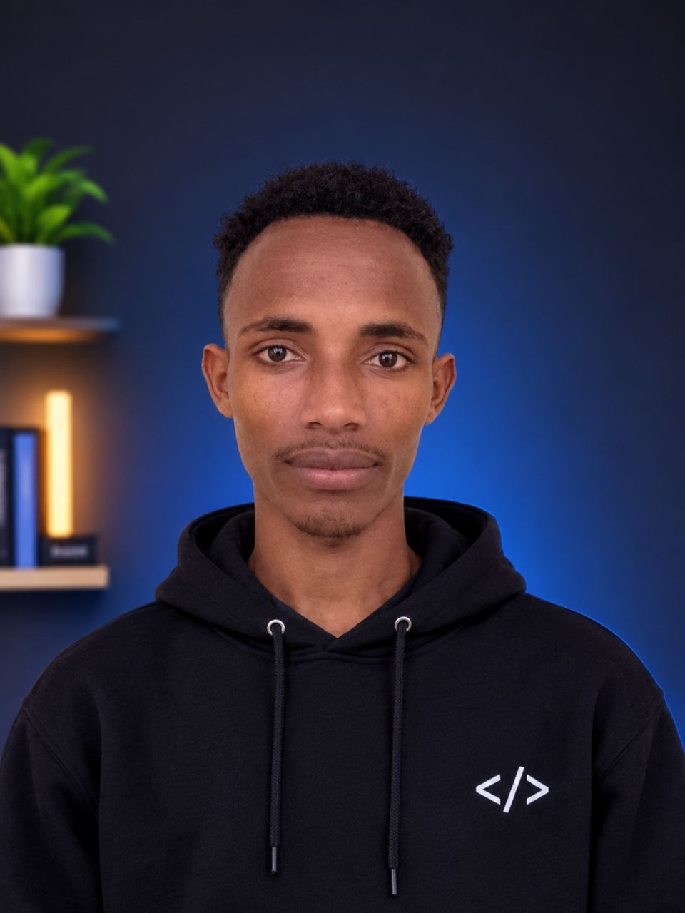

I build modern, responsive, and user-friendly web applications that help businesses improve their operations, manage their activities, and grow in the digital world.
View My ProjectsHello! I'm Matewos Melese, a passionate Full-Stack Web Developer and Software Engineering student at Mizan-Tepi University, Ethiopia. I specialize in building modern, responsive, and user-friendly web applications that help businesses improve their operations, manage their activities, and grow in the digital world. I enjoy turning ideas into functional digital solutions, from designing attractive user interfaces to developing powerful backend systems and managing databases. My focus is on creating practical, reliable, and efficient systems that solve real-world problems for different types of businesses. Beyond technology, I believe in faith, discipline, continuous growth, and working with purpose. These values inspire me to approach every challenge with creativity, dedication, and determination. My vision is to use technology to make a meaningful impact, empower businesses, and build solutions that make people's lives easier. Building with purpose. Creating with passion. Growing with faith.
Full-Stack WebeDevelopment
mobailapp development
software maintenance
system administration